THE SIGNAL IN THE SUBWAY
A frequency cuts through your headphones. Nobody else reacts. The platform lights stutter.
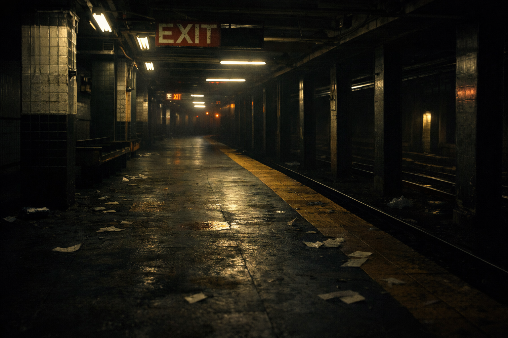
About
The Signal in the Subway is an interactive mystery set in the New York City subway system. While waiting on a late‑night platform, the player begins hearing a strange signal through their headphones. Following the signal leads through trains, stations, and hidden tunnels beneath the city where each decision unlocks a different path and ending.
- Events: click choices, hover signal distortion, scroll unlock
- Animations: glitch title, flicker overlay, fade-in scenes
- Sound: static/rumble/beep on user actions
Credits
Images generated with ChatGPT.
Sound effects sourced from Mixkit.
Signal Detected
The audio snaps into a pattern—like coded taps. A train approaches. The doors open.
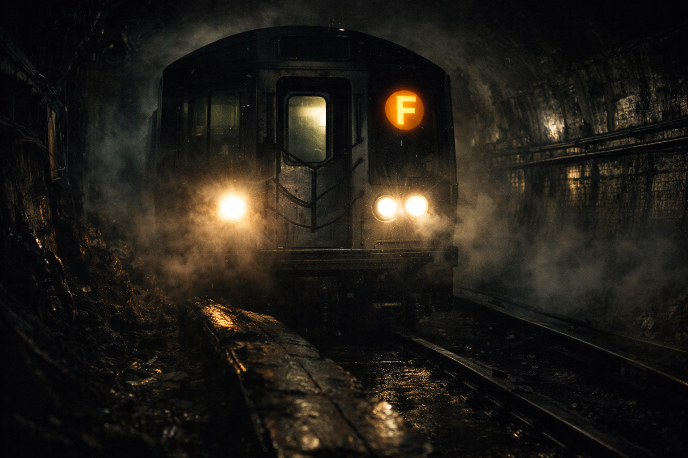
Board the F train
2nd Ave. A masked figure watches the doors.
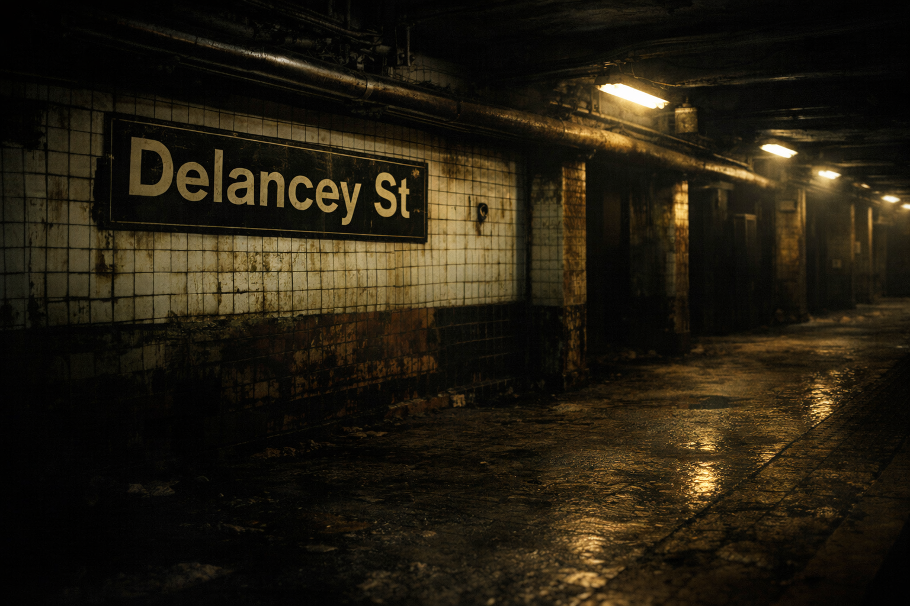
Wait for the G train
Bergen St. A maintenance door sits slightly open.
F Train — 2nd Avenue
The masked figure slips between cars. The signal gets louder in your skull.
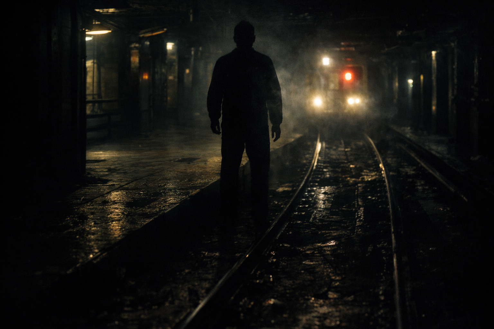
Follow the masked figure
Locked doors. Hidden corridors. A place that shouldn’t exist.
Ignore and exit at Delancey
You choose normal. The signal hates that.
G Train — Bergen Street
The platform is colder here. A maintenance door marked AUTHORIZED ONLY is unlocked.
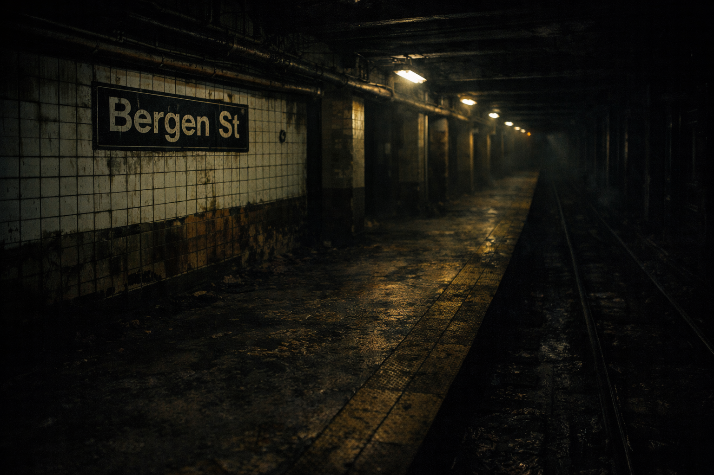
Enter maintenance tunnel
The air tastes like metal and old electricity.
Ride to the end of the line
The last stop is never on the map.
Maintenance Tunnel
Your footsteps echo. The lights flicker. A door ahead leaks blue light.
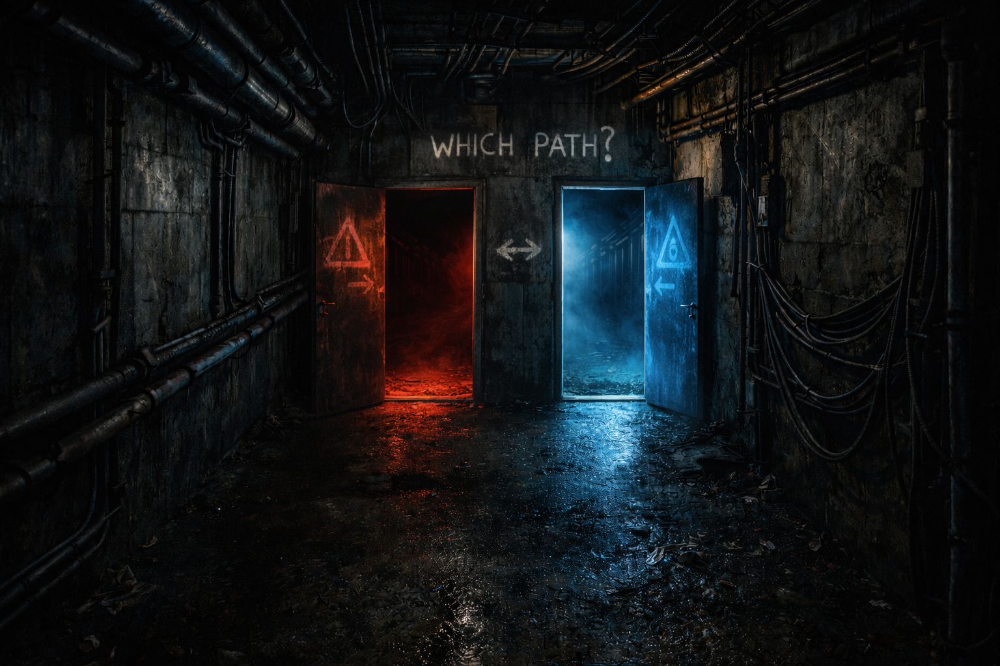
Discover secret terminal
The room is alive. Screens watch you back.
Get trapped
The door behind you clicks. The signal becomes static.
End of the Line
The train stops. The doors don’t open. A reflection moves in the window—behind you.
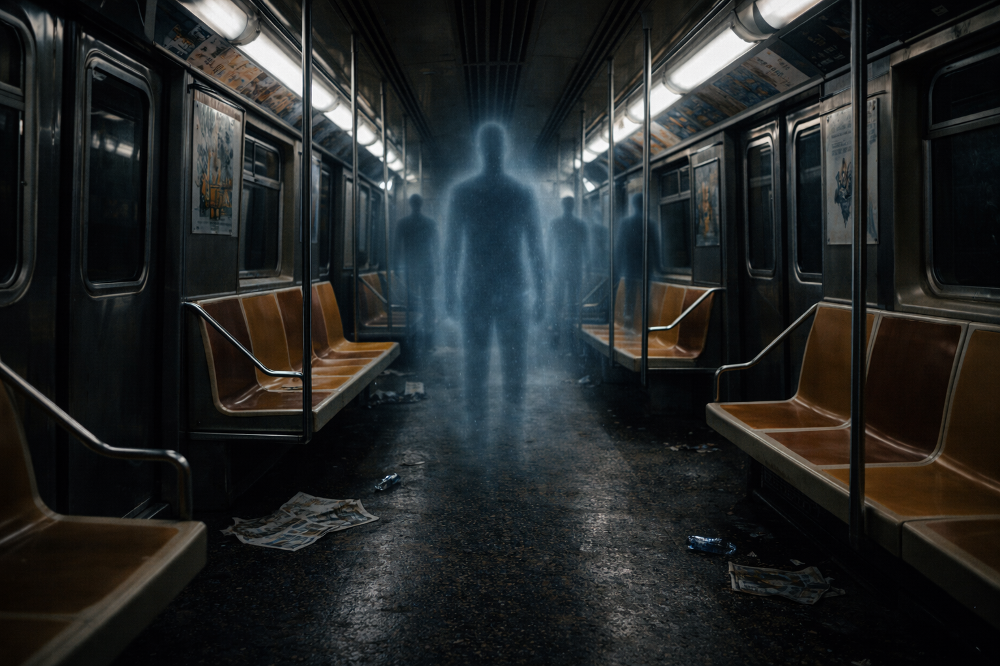
ENDING A — Join the Resistance
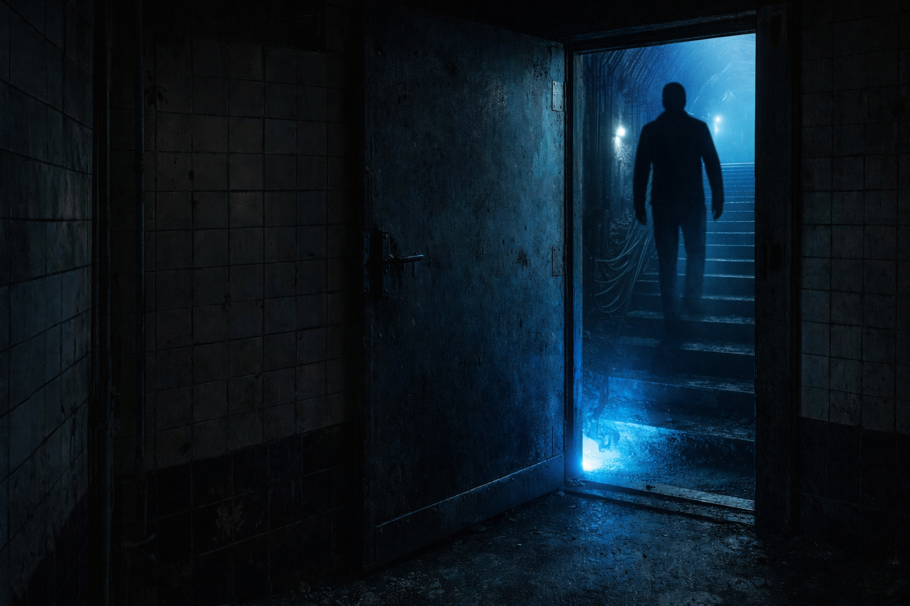
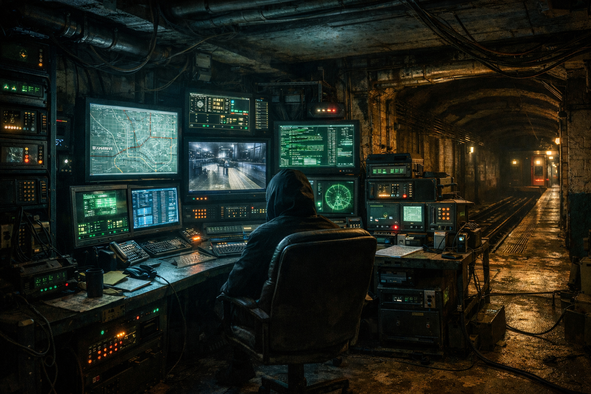
The masked figure leads you through a locked maintenance corridor. The tunnel opens into a hidden control room glowing with monitors and cables. Signals ripple across the screens like veins beneath the city.
A voice behind you whispers, “You finally heard it.”
The subway isn’t just transportation. It’s a hidden network of signals and surveillance running beneath New York. And somehow… the system chose you.
ENDING B — Signal Fades
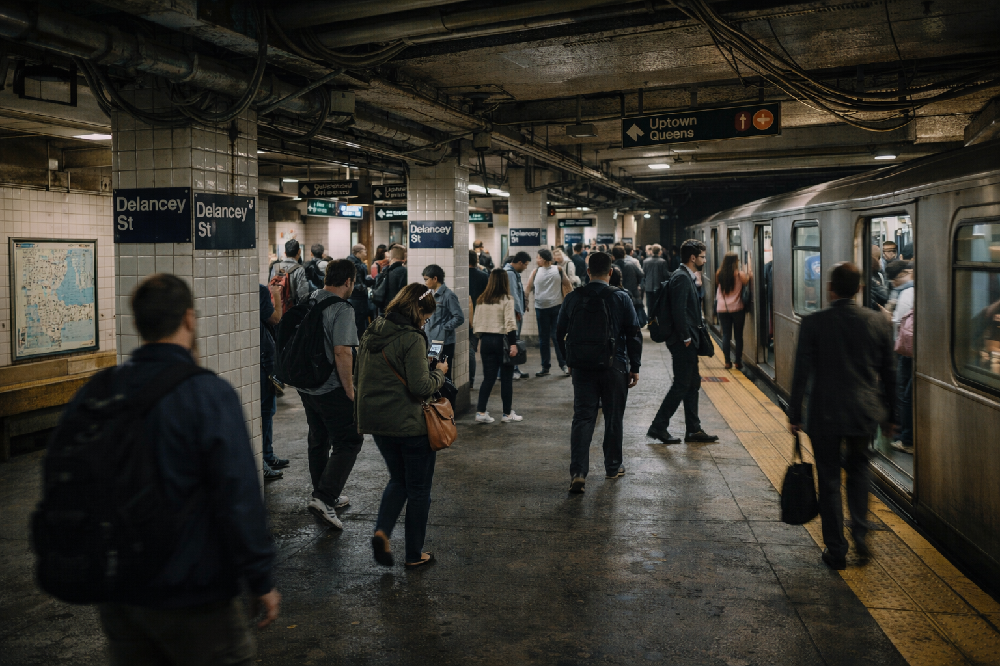
You step off the train at Delancey and pull off your headphones. Instantly the signal disappears.
The platform fills with ordinary noise again—footsteps, announcements, trains arriving. Maybe it was just interference.
But as the doors close behind you, the headphones crackle once more. Just for a moment.
Maybe you weren't supposed to ignore it.
ENDING A — Secret Terminal
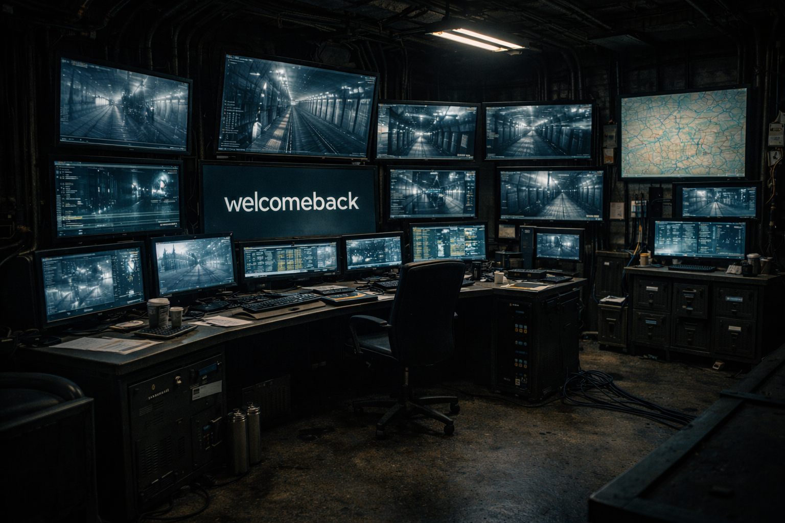
You push open the door and step into a room filled with glowing terminals. Screens flicker with maps of the entire subway system.
One monitor turns toward you and a cursor begins typing by itself: WELCOME BACK
Somehow the system recognizes you. The signal was never random.
ENDING B — Trapped
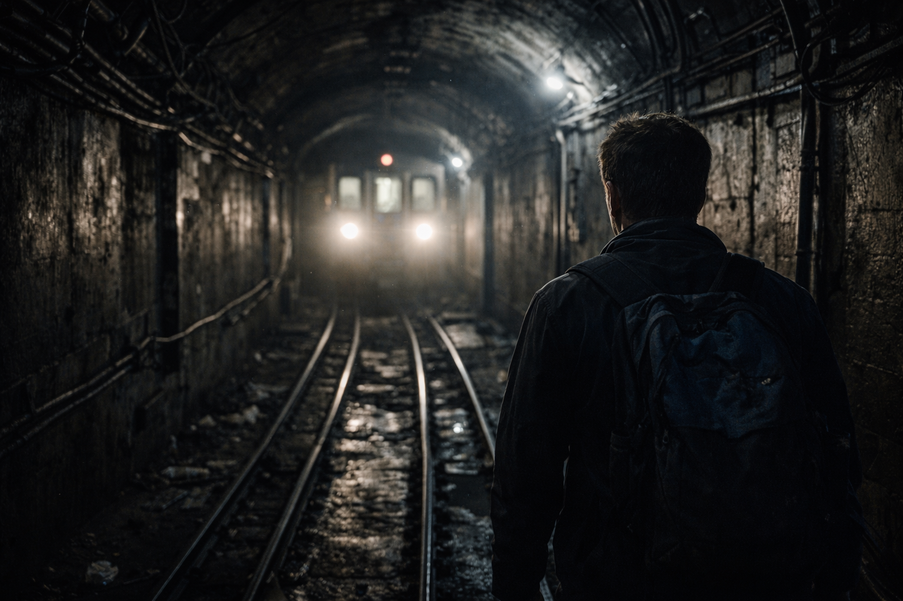
The door behind you slams shut. The lights flicker and then die completely.
The signal becomes a flat line in your headphones. Static fills the silence.
You press your hands against the concrete walls. They feel warm… like something is breathing behind them.
ENDING C — Lost Forever
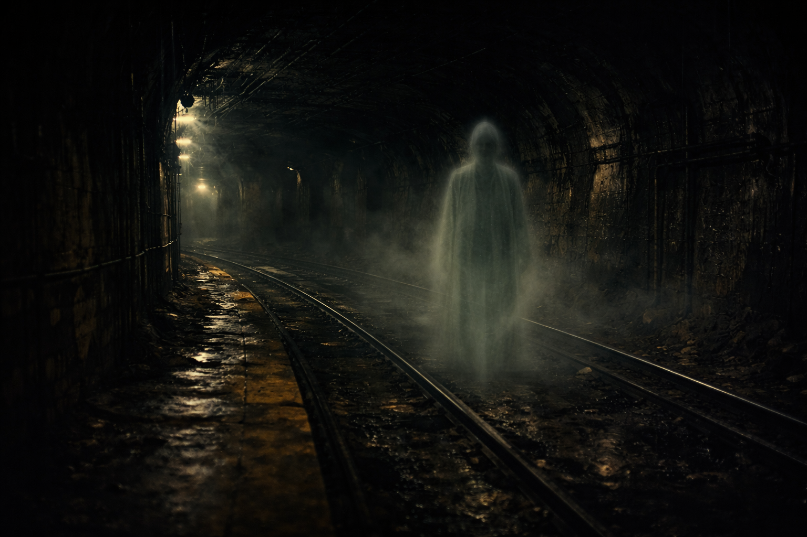
The train moves through darkness with no stops and no announcements.
The passengers around you sit perfectly still. None of them blink.
When you look at the reflection in the window, you finally understand. You’re sitting among them now.
The train keeps moving. And it never reaches the end of the line.
Hidden Log Entry
You unlocked this by scrolling. That means you’re paying attention.
“If you can hear the signal, you’re already part of the network.”